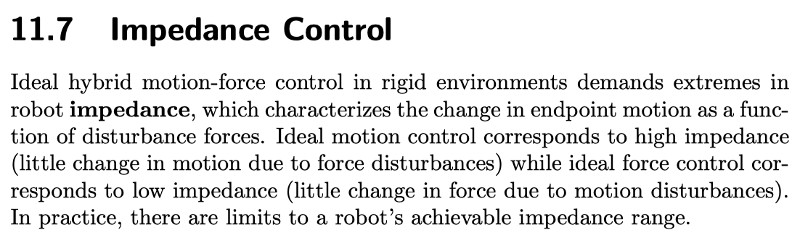
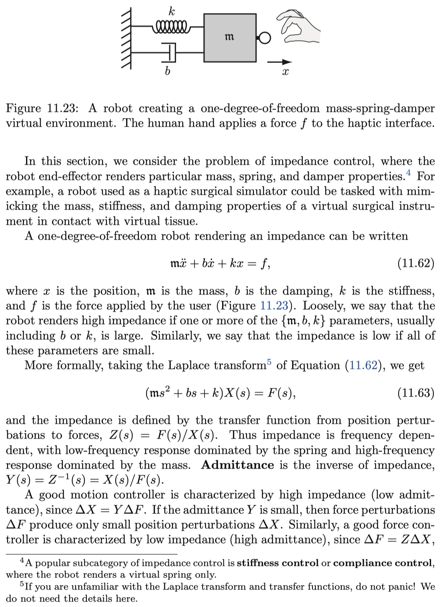
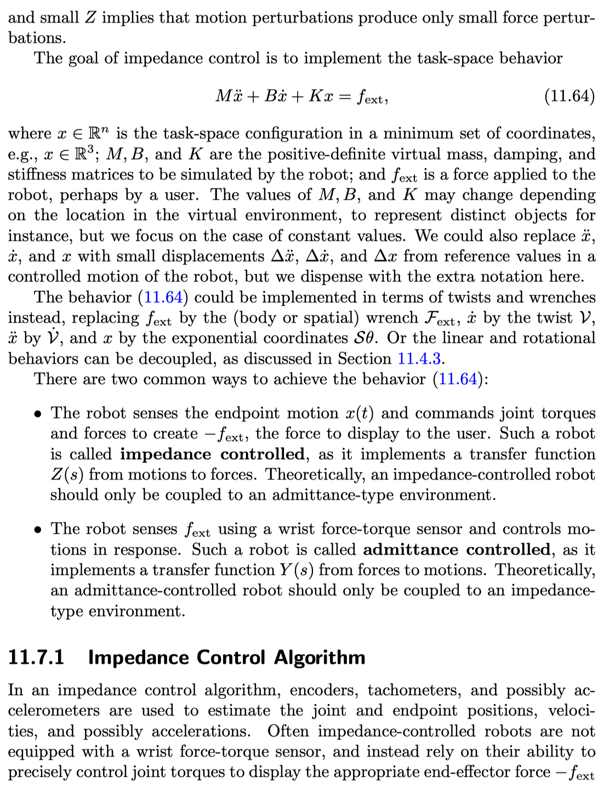
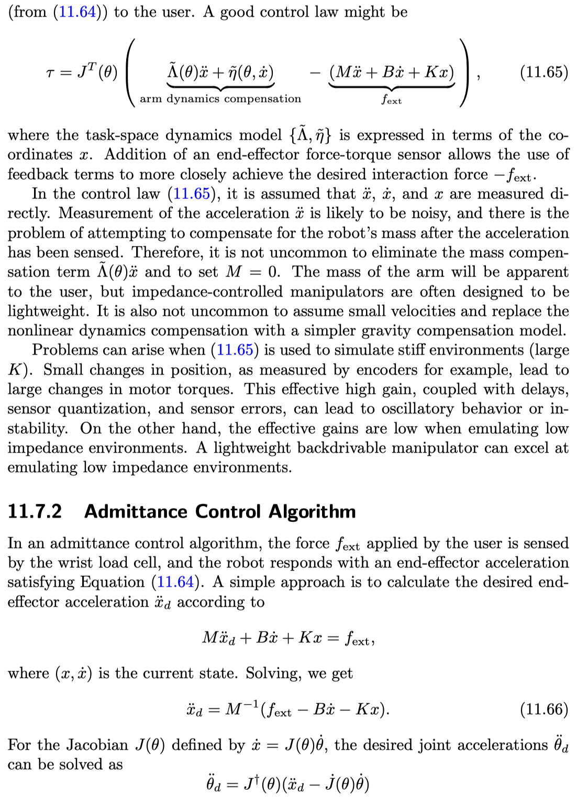
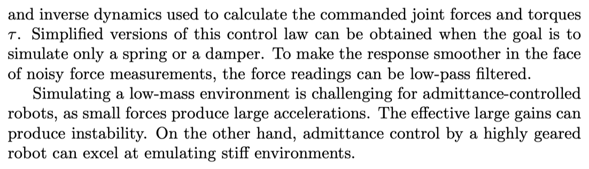

在《Modern Robotics - Mechanics, Planning and Control》一书中，对于阻抗控制与导纳控制做了比较好的总结。这篇博文就对于这两种控制的提出思路进行总结。
原文





总结
其实原文已经讲阻抗（impedance）控制与导纳（admittance）控制的联系与区别写得非常清楚了，我在这里也只是单纯的翻译并且组织一下。
在刚性环境下的理想的运动-力混合控制系统中对于机器人的阻抗特性进行了要求，这里的阻抗特性指的是对将机器人末端的运动视为力的扰动的一个函数。理想的运动控制要求高阻抗，理想的力控制要求低阻抗。而从实际情况来讲，机器人的能达到的阻抗范围是有限的。
考虑如图的一个mass-spring-damper的系统，用运动学公式来表示则有：
$$
\mathfrak { m } \ddot { x } + b \dot { x } + k x = f
$$
不严谨的说${\mathbf{m}, b, k}$中的一个或者几个越大的情况下，整个系统的阻抗性能越强，通常来说是b或者k这两个参数。或者我们可以说，如果所有的参数都比较小的话，那么这个系统的阻抗特性比较弱。
我们取上面公式的拉普拉斯变换（Laplace transform），有：
$$
\left( \mathfrak { m } s ^ { 2 } + b s + k \right) X ( s ) = F ( s )
$$
这个公式总的转换方程就可以看作是阻抗的定义式，$Z ( s ) = F ( s ) / X ( s )$。因此，阻抗特性是频率相关的，其中低频特性由弹性参数主宰，高频特性由质量参数主宰。而导纳（admittance）则是阻抗的inverse，$Y ( s ) = Z ^ { - 1 } ( s ) = X ( s ) / F ( s )$。
一个好的运动控制器需要高阻抗（低导纳），因为导纳越小，对于力的扰动会产生更小的位移。而相似的，一个好的力控制器需要低阻抗（高导纳），因为阻抗越小对于位置的扰动来说会产生更小的力扰动。
将阻抗控制应用到作业空间中，有：
$$
M \ddot { x } + B \dot { x } + K x = f _ { \mathrm { ext } }
$$
- 机器人感知末端运动$x(t)$从而命令机器人各个关节转矩来产生方向的力$-f_{ext}$，这种机器人控制方法为阻抗控制，通过转换方程Z(s)来从末端运动来获得力的大小。理论上来讲，一个阻抗控制的机器人只应该与导纳类型的环境相搭配。
- 机器人使用腕部的力传感器来感知外力$f_{ext}$从而控制末端的运动，这种类型的机器人控制方法称为导纳控制，通过转换方程Y(s)来从力得到运动。理论上来讲，一个导纳控制的机器人只应该与阻抗类型的环境相搭配。
阻抗控制算法（Impedance Control Algorithm）
$$
\tau = J ^ { T } ( \theta ) \left( \tilde { \Lambda } ( \theta ) \ddot { x } + \tilde { \eta } ( \theta , \dot { x } ) - ( M \ddot { x } + B \dot { x } + K x ) \right)
$$
括号中的前两项是机器人动力学补偿，而后一项为外力的影响。
导纳控制算法（Admittance Control Algorithm）
在导纳控制中，由用户施加的外力$f_{ext}$由机器人腕关节的传感器感知，并且机器人作出对应的末端加速度来满足公式
$$
M \ddot { x } _ { d } + B \dot { x } + K x = f _ { \mathrm { ext } }
$$
这个公式中$( x , \dot { x } )$是现在时刻状态，我们可以解出：
$$
\ddot { x } _ { d } = M ^ { - 1 } \left( f _ { \mathrm { ext } } - B \dot { x } - K x \right)
$$
设定雅可比矩阵$J(\theta)$由式$\dot{x}=J(\theta)\dot{\theta}$定义，那么所求的关节加速度$\ddot { \theta } _ { d }$则由下式求出：
$$
\ddot { \theta } _ { d } = J ^ { \dagger } ( \theta ) \left( \ddot { x } _ { d } - \dot { J } ( \theta ) \dot { \theta } \right)
$$
在用力传感器获取接触力的信息的时候，有很大可能会参杂着很多噪声，这时候可以使用低通滤波器来过滤噪声。
参考文献
Kevin M. Lynch and Frank C. Park, Modern Robotics Mechanics, Planning, and control, 2017, Cambridge University Press.